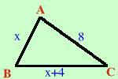

|
L'ipotenusa di un triangolo rettangolo supera di metri 4 un cateto e l'altro cateto vale m 8. Determinare il perimetro del rettangolo  Scriviamo i dati BC = AB + 4 AC = 8 m Pongo: AB = x al solito mi conviene chiamare x il termine che si trova dopo l'uguale BC = x + 4 AC = 8 Stavolta ho tre segmenti diversi e il problema non mi fornisce nessuna relazione che li coinvolga. Significa che devo trovare io una relazione che sia valida e leghi i dati; essendo il triangolo rettangolo la relazione cercata sara' il teorema di Pitagora Teorema di Pitagora BC2 = AB2 + AC2 Sostituisco i dati ai segmenti (x + 4)2 = x2 + 82 eseguo i calcoli x2 + 8x +16 = x2 + 64 x2 + 8x +16 - x2 - 64 = 0 8x - 48 = 0 8x = 48 x = 48/8 = 6 Quindi AB = x = 6 m BC = x + 4 = 6 + 4 = 10 m AC = 8 m devo trovare il perimetro Perimetro = AB + BC + AC = 6 + 10 + 8 = 24 m Anche in questo problema e' presente la terna pitagorica 3, 4 e 5, infatti i lati sono: AB = 6 = 2·3 BC = 10 = 2·5 AC = 8 = 2·4. Se stai bene attento la meta' dei problemi sui triangoli rettangoli si basa sulla terna 3,4 e 5 |